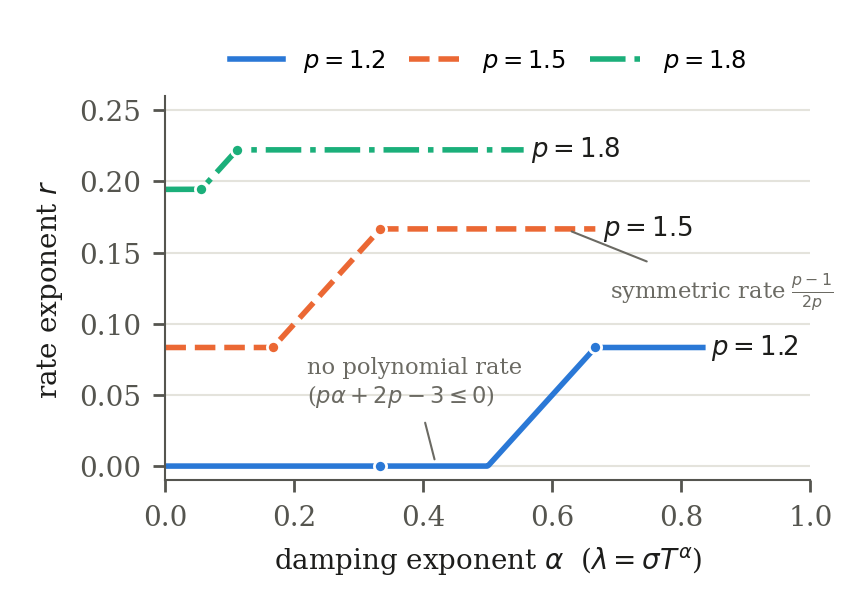
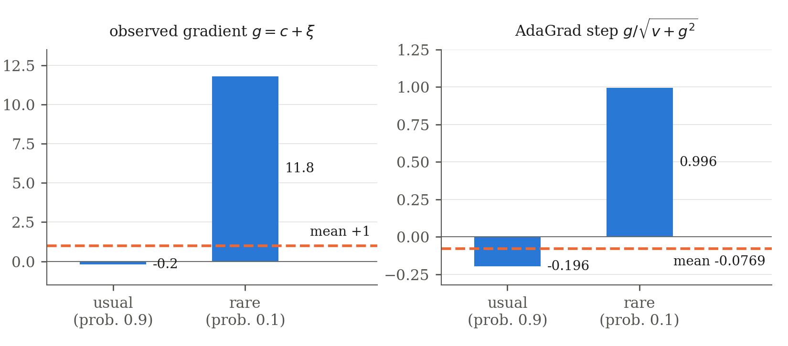
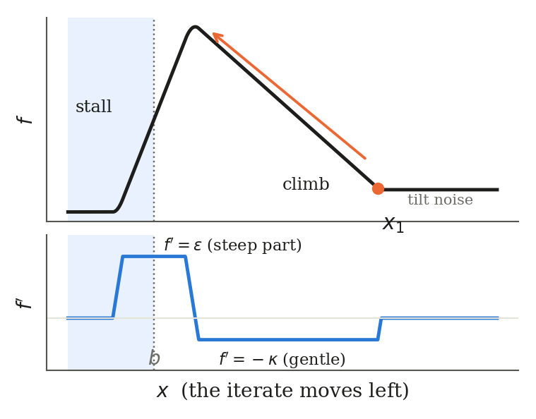

AdaGrad under heavy-tailed noise: symmetry, asymmetry and damping
Symmetric heavy-tailed noise is easy for AdaGrad. Lopsided noise makes it climb uphill, and that makes Liu's slower rate the true worst case. Damping repairs it gradually.
Abstract
We ask how fast AdaGrad drives the average gradient norm to zero on smooth nonconvex problems when the stochastic gradient has only a finite p-th moment, 1 < p ≤ 2. With symmetric noise the rate is T−(p−1)/(2p) for every p, and this is sharp at a fixed step size. With general noise and small damping, Liu's slower exponent (3p−4)/(4p) is sharp for every step size, and for p ≤ 4/3 no polynomial rate holds. The cause is a climb: asymmetric noise pushes AdaGrad uphill, and the height it gains pays for a long descent that heavy-tailed noise makes slow. Damping limits that height. For damping λ = σTα and a fixed step size we find the exponent across the whole window: it grows linearly in α wherever it is positive, and becomes the symmetric one at α = (2−p)/p. The matching upper bounds come from Liu's own lemmas with the damping retained.
Results
Rate exponents r with RT ≈ T−r up to logarithms, at a fixed step size unless stated.
| noise | damping λ = σTα | rate exponent | where |
|---|---|---|---|
| symmetric | any fixed λ > 0 | (p−1)/(2p) | Theorem 3.1 |
| general | α ≤ (2−p)/(2p) | (3p−4)/(4p); none for p ≤ 4/3; every step size | Corollary 4.2 |
| general | (2−p)/(2p) ≤ α ≤ (2−p)/p | (pα+2p−3)/(2p) where ≥ 0 | Corollary 5.2(i) |
| general | (2−p)/p ≤ α ≤ 1/p | (p−1)/(2p) | Corollary 5.2(ii) |

Why symmetry helps
AdaGrad divides by a quantity containing the current gradient, so an unbiased gradient need not give an unbiased step. If the noise is symmetric, the expected step still points downhill, however large the noise. Steps on which the noise dominates cannot pile up: each has probability at least 1/4 of multiplying λ2+vt by 3/2, so their expected number is logarithmic.
Why asymmetry hurts
On a gentle slope the noise usually takes a small value that reverses the sign of the gradient. A rare, large value restores the mean, but AdaGrad cuts that step to length at most γ. In the paper's instance the rare value has probability 1/(4N) with N = ⌊T/2⌋, so with probability above 1/2 it never occurs.

The height gained pays for a long descent, on which symmetric Pareto noise grows the accumulator and slows every step. Balancing the climb against the descent gives exactly Liu's exponent (3p−4)/(4p).

What it does not establish
- Failure on a fixed problem: the worst-case instance is chosen after the algorithm parameters and may depend on the horizon. On bounded objectives Liu's Theorem 4.2 gives convergence.
- A bound on the best iterate: the lower bounds are for the average gradient norm.
- The rate after tuning the step size with the horizon for (2−p)/p < α ≤ 1/p: there the rates match for each fixed step size only.
- The same penalty with one common noise law for the whole run: the hard oracle uses two noise laws and picks one by position. This is the open question of the paper.
The matching upper bound is Liu's own argument for his Lemma A.2, run with the damping kept, followed by his Lemma A.3. The paper is AI-assisted; its section on the use of AI tools says how. It has not been peer reviewed.